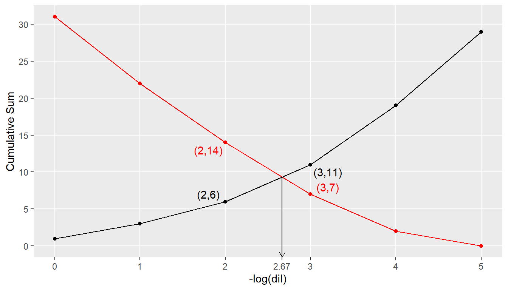
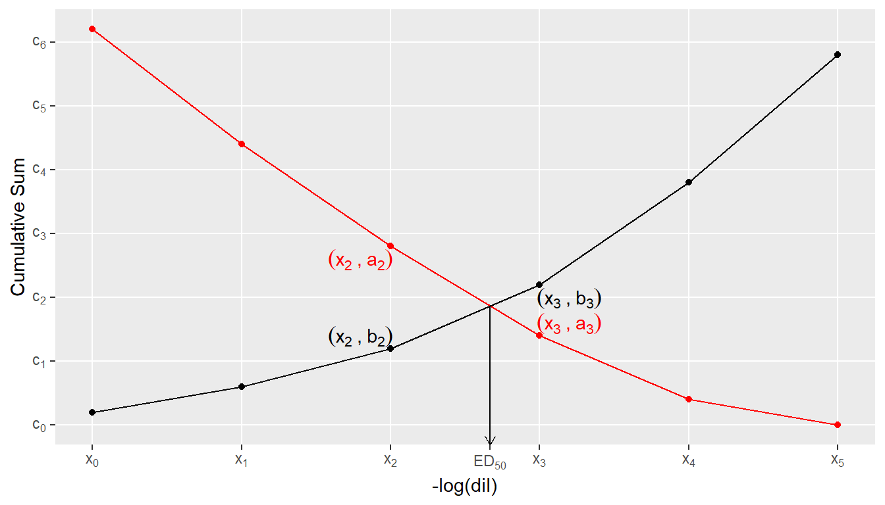
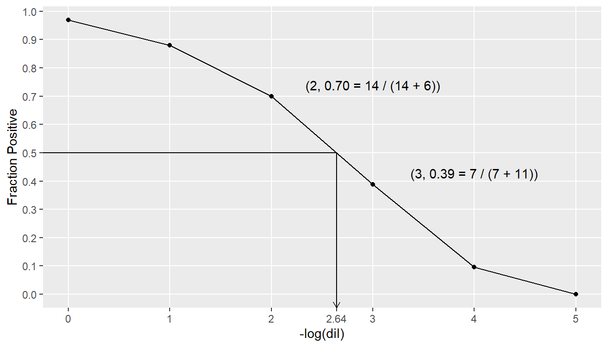
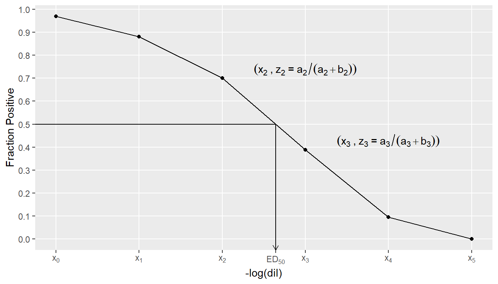
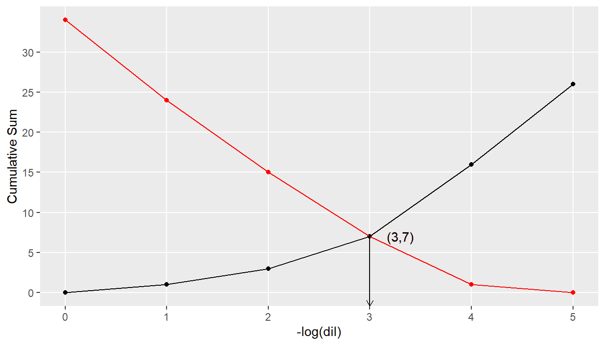
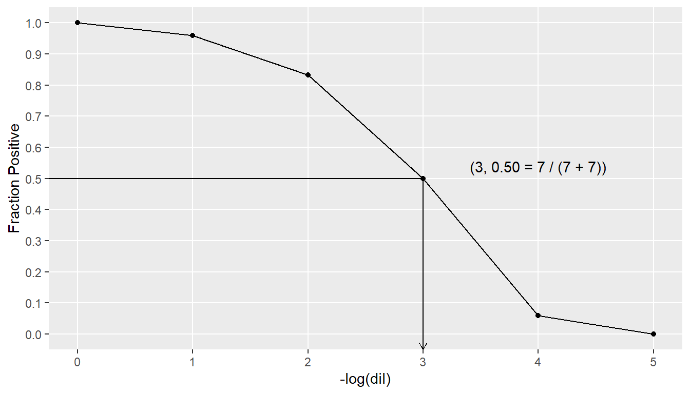

| x = -log(dil) |
y = Pos |
Neg | N | a = Cum Pos |
b = Cum Neg |
z = Fract Pos |
|---|---|---|---|---|---|---|
| 0 | 9 | 1 | 10 | 31 | 1 | 0.9688 |
| 1 | 8 | 2 | 10 | 22 | 3 | 0.8800 |
| 2 | 7 | 3 | 10 | 14 | 6 | 0.7000 |
| 3 | 5 | 5 | 10 | 7 | 11 | 0.3889 |
| 4 | 2 | 8 | 10 | 2 | 19 | 0.0952 |
| 5 | 0 | 10 | 10 | 0 | 29 | 0.0000 |
ED50 Hand Calculations
2026-10-08
Introduction
These notes can be viewed as a supplement to CVB-WI-0281, Nonparametric Estimation of Median Effective Dose. Their purpose is to give specific examples of the calculations a technician may perform if computing \(ED_{50}\) by hand for either the Dragstedt-Behrens or Reed-Muench methods. Using these notes as a guide will also provide the technician with a tool to check the instructions for computing \(ED_{50}\) contained in a firm’s Outline of Production or Special Outline.
In the literature, there are two distinct methods which are both called “Reed-Muench”. However, one of these methods is actually the Dragstedt-Behrens method. If one is instructed to use the Reed-Muench method to compute \(ED_{50}\), it is imperative to determine which of the two methods is actually intended. Since this case of mistaken identity is so firmly entrenched in the scientific community, we typically treat this misnomer as a minor issue.
Data With Equal-Sized Groups
CVB-WI-0281 states that the “Positives are those with increasing response”. However, in laboratory experiments, it is common for the number of positives to have a decreasing response. As the Dragstedt-Behrens and Reed-Muench methods do not actually require this, our sample data has decreasing positive response. We first consider the following example data which has 10 subjects at each dose. The columns “Pos” and “Neg” are the observed responses at each dose. “Cum Pos” is the cumulative sum of “Pos” and is computed in the same direction as we observe the number of positive responses increasing. Similarly, “Cum Neg” is the cumulative sum of “Neg” and is computed in the same direction as we observe the number of negative responses increasing. Finally, the column “Fract Pos” is the fraction of the cumulative responses which are positive at each dose. (e.g. At -log(dil) = 4, the positive fraction is 2 / (2 + 19) = 0.10.)
Reed-Muench

\(ED_{50}\) is defined to be the dilution at which the two lines intersect, which is
\[ ED_{50} = 2 + \frac{(14 - 6)(3 - 2)}{(11-6) - (7 - 14)} = 2.67 \] The general plot looks like this:

And the general equation is:
\[ ED_{50} = x_2 + \frac{(a_2 - b_2)(x_3 - x_2)}{(b_3 - b_2) - (a_3 - a_2)} \]
Dragstedt-Behrens

\(ED_{50}\) is defined to be the dilution at which the fraction positive is equal to 0.5, which is
\[ ED_{50} = 2 + \frac{1}{2} \cdot \frac{(7 + 11)(14 - 6)(3 - 2)}{14 \cdot 11 - 7 \cdot 6} = 2.64 \]
The general plot looks like this:

And the general equation is:
\[ ED_{50} = x_2 + \frac{1}{2} \cdot \frac{(a_3 + b_3)(a_2 - b_2)(x_3 - x_2)}{a_2 \cdot b_3 - a_3 \cdot b_2} \]
Data with Different Sized Groups
Occasionally, there is not the same number of subjects at each dose. However, one of the fundamental assumptions of these methods is that the number of subjects at each dose is the same. We demonstrate two ways that the data can be adjusted to account for the unequal group sizes. The method you choose to use will probably depend on whether you would rather work with larger integers or with decimals. In either case, the two methods produce the same Reed-Muench and Dragstedt-Behrens estimates, apart from rounding.
Method 1 - Integers
Because each group contains either 9 or 10 subjects, we want to work with a hypothetical group size that is divisible by both 9 and 10, which in this case is 90. (If there were either 8 or 10 subjects in each group, we could choose a hypothetical group size of 40 or 80.)
Continuing with our example, the adjusted number of positives is 90 \(\times\) Pos / N and the adjusted number of negatives is 90 \(\times\) Neg / N. “Cum Pos” is now the cumulative sum of the adjusted positives and “Cum Neg” is the cumulative sum of the adjusted negatives, as described in Section 2. Similarly, “Fract Pos” is computed as before. Using these adjusted values, you can proceed with either method as described in Section 2.1 and Section 2.2.
| x = -log(dil) |
Pos | Neg | N | y = Adj Pos |
Adj Neg | Adj N | a = Cum Pos |
b = Cum Neg |
z = Fract Pos |
|---|---|---|---|---|---|---|---|---|---|
| 0 | 9 | 1 | 10 | 81 | 9 | 90 | 286 | 9 | 0.9695 |
| 1 | 8 | 2 | 10 | 72 | 18 | 90 | 205 | 27 | 0.8836 |
| 2 | 7 | 3 | 10 | 63 | 27 | 90 | 133 | 54 | 0.7112 |
| 3 | 5 | 5 | 9 | 50 | 50 | 90 | 70 | 104 | 0.4023 |
| 4 | 2 | 8 | 9 | 20 | 80 | 90 | 20 | 184 | 0.0980 |
| 5 | 0 | 10 | 10 | 0 | 90 | 90 | 0 | 274 | 0.0000 |
Method 2 - Decimals
In this case, Adj Pos = Pos / N and Adj Neg = Neg / N. If doing this by hand, we suggest using at least 4 decimal places to minimize rounding errors. “Cum Pos” is now the cumulative sum of the adjusted positives and “Cum Neg” is the cumulative sum of the adjusted negatives, as described in Section 2. Similarly, “Fract Pos” is computed as before. (Notice how the “Fract Pos” column is the same in both tables.) Using these adjusted values, you can proceed with either method as described in Section 2.1 and Section 2.2.
| x = -log(dil) |
Pos | Neg | N | y = Adj Pos |
Adj Neg | a = Cum Pos |
b = Cum Neg |
z = Fract Pos |
|---|---|---|---|---|---|---|---|---|
| 0 | 9 | 1 | 10 | 0.9000 | 0.1000 | 3.1778 | 0.1000 | 0.9695 |
| 1 | 8 | 2 | 10 | 0.8000 | 0.2000 | 2.2778 | 0.3000 | 0.8836 |
| 2 | 7 | 3 | 10 | 0.7000 | 0.3000 | 1.4778 | 0.6000 | 0.7112 |
| 3 | 5 | 5 | 9 | 0.5556 | 0.5556 | 0.7778 | 1.1556 | 0.4023 |
| 4 | 2 | 8 | 9 | 0.2222 | 0.8889 | 0.2222 | 2.0444 | 0.0980 |
| 5 | 0 | 10 | 10 | 0.0000 | 1.0000 | 0.0000 | 3.0444 | 0.0000 |
Boundary Cases
It may happen that there is a dose at which Cum Neg is equal to Cum Pos. If this happens, then \(ED_{50}\) is the -log(dil) value at which the cumulative responses are equal. For example, in Table 4, when -log(dil) = 3, both Cum Neg and Cum Pos are equal and the fraction positive is 0.5. Thus, \(ED_{50}\) is 3 for both the Reed-Muench and Dragstedt-Behrens methods.
| x = -log(dil) |
y = Pos |
Neg | N | a = Cum Pos |
b = Cum Neg |
z = Fract Pos |
|---|---|---|---|---|---|---|
| 0 | 10 | 0 | 10 | 34 | 0 | 1.0000 |
| 1 | 9 | 1 | 10 | 24 | 1 | 0.9600 |
| 2 | 8 | 2 | 10 | 15 | 3 | 0.8333 |
| 3 | 6 | 4 | 10 | 7 | 7 | 0.5000 |
| 4 | 1 | 9 | 10 | 1 | 16 | 0.0588 |
| 5 | 0 | 10 | 10 | 0 | 26 | 0.0000 |
Reed-Muench

Dragstedt-Behrens
